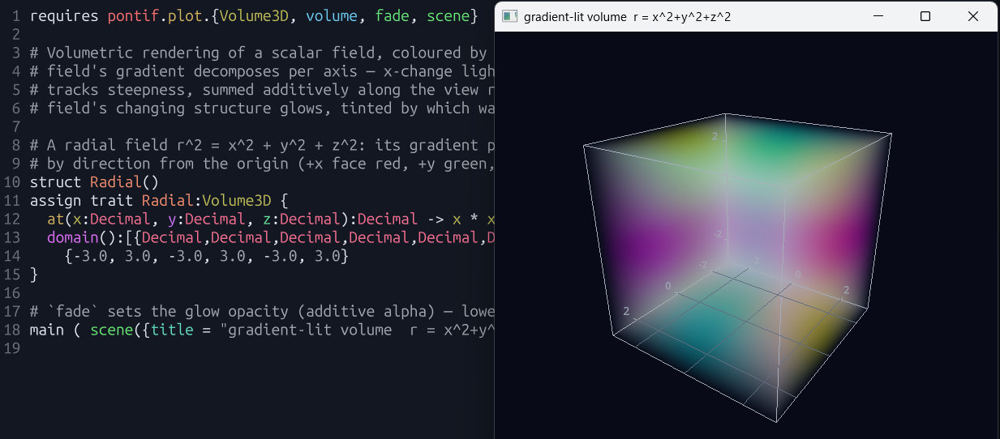
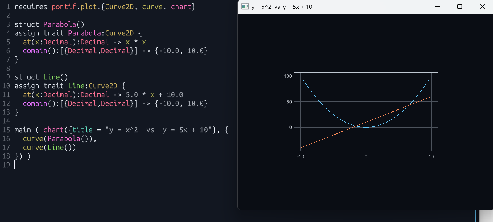
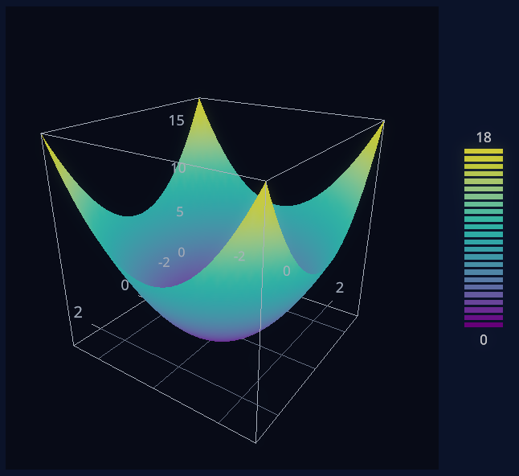
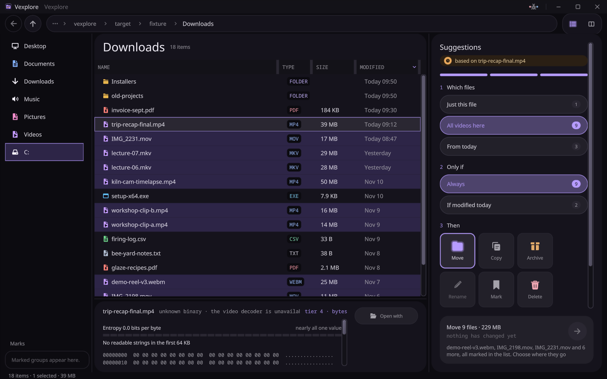
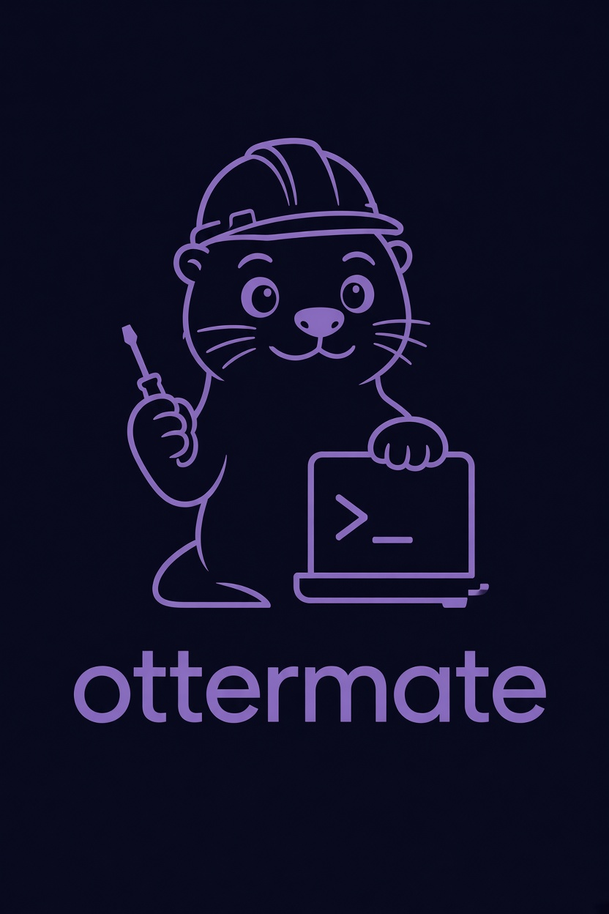
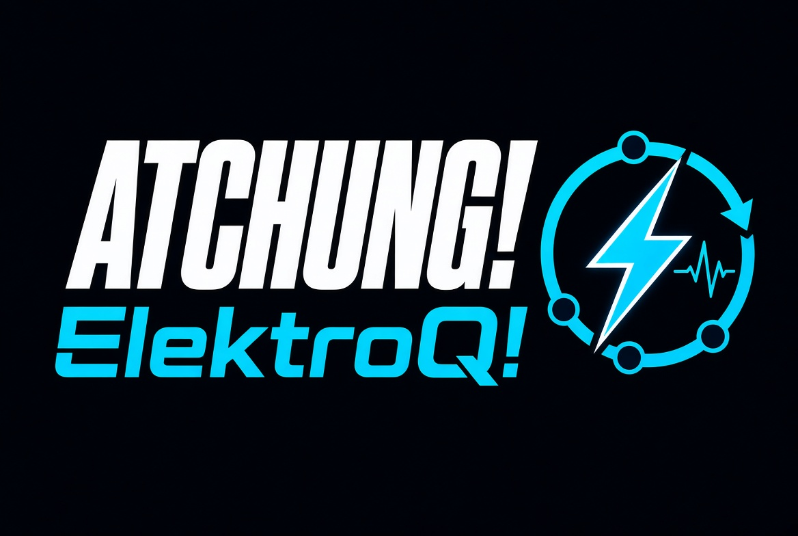

Retained mode, one batch
Declarative trees, flex layout, relative units, and live mutation from any thread, rendered as one batch of one SDF uber-shader. A ray-marched viewport costs a rebind and nothing else.
Five projects with one designer and one coding agent: a programming language whose types are proofs, a number system where 0/0 is a value, a desktop stack drawn on the GPU, a shader IR that runs on the GPU and the CPU, and message passing that works the same over any transport. They build on each other, and every line of code was written with Claude Code.
Types that are claims the compiler proves, not annotations it trusts.
Pontif is a language for building real programs: modules, three kinds of polymorphism, operator overloading, a native GUI and plotting, and computations compiled to the GPU at runtime. A refined type such as [Int:@>=0] is a proof obligation. A match is checked for totality, a declared return is proved or the program is rejected, and when the built-in prover can't close a claim, you write the missing step in an assign proof beside the code.
There is deliberately no SMT solver. The prover is small enough to read end to end, and what it concluded is written out as plain text you can review: the receipt graph, the conservation ledger, and a Narrowings view that shows your program with every type replaced by what was inferred.
proof translate = DataConservative() proves every field of the input reaches the output. Drop one and the error names it.emit. An action's parameter type is its filter, and an event nobody consumes is an error.module ledger struct Account(balance:[Int:@>=0]) struct Txns(amount:Int, rest:[Txns|Done]) struct Done() method Account.deposit(n:Int):Account -> match n { [@>0] -> Account(this.balance + n) [@<=0] -> this } function totalIn(ts:[Txns|Done]):Int -> match ts { [Txns] -> ts.amount + totalIn(ts.rest) [Done] -> 0 } Account(0).deposit(totalIn(Txns(100, Txns(50, Done())))).balance # → 150



Plots, volumes and SDF shapes are part of the standard library, drawn with the native GUI.
A calculator that divides by zero, and a proof that it may.
In traction, a value is a pair (p, q) that is never reduced. Q(1, 2) and Q(2, 4) are different values, q = 0 is allowed, and 0/0 is a value like any other. The same pair can be read as a complex number, a difference, a sum, a ratio, a product or a logarithm. Each reading has its own arithmetic, and moving between them is always an explicit conversion.
Because nothing is divided away, nothing is lost. An inverse returns to 1 with its norm kept as a residue, failing exactly where the product loses information, and x − x remembers what cancelled.
C(p,q)q + ip, complexD(p,q)q − p, differenceS(p,q)p + q, sumQ(p,q)p / q, ratioP(p,q)p · q, productL(p,q)log scale and turnLines from the cott-engine README, trimmed. Every answer says which cott-lean file covers it, or that none does.
Desktop applications drawn live on the GPU that rest at zero frames per second.
VexelRay is a whole stack, from a Vulkan engine through to nine applications that know about each other: a file explorer that suggests instead of asking, an IDE, a terminal, a picture and video viewer, a calculator, physics sandboxes and more. A window draws when something changes and sleeps when nothing does, and the whole window is one draw call: a single SDF uber-shader draws shadows, lighting and text.
Each application is compiled ahead of time by GraalVM Native Image into one executable that runs without a JVM. The main thread only draws. App logic, disk work and time run on their own lanes, placed at compile time, so a part that hangs never freezes the window.
Install the applications · 0.1.2, an experimental prerelease
irm https://sibarum.github.io/install.ps1 | iexcurl -fsSL https://sibarum.github.io/install.sh | sh
Declarative trees, flex layout, relative units, and live mutation from any thread, rendered as one batch of one SDF uber-shader. A ray-marched viewport costs a rebind and nothing else.
The template generates an application with tabs, a file navigator, persistent settings, and tests that build the window without a GPU. Most of the suite started that way.

A command line that drives a running VexelRay application over its automation socket: keys, clicks, the widget tree, readouts and real screenshots, with the verdict in its exit status.
$ ottermate settle --launch mvn exec:exec -Dautomation=0 automation: localhost:50845 ottermate: driving localhost:50845 ok v2 $ ottermate shot after.png ok C:\work\after.png 132904 bytes
Write a kernel once. Run it on the GPU and the CPU, and check they agree.
SupirVast describes GPU programs as a typed, structured IR called core, and lowers it two ways: to validated SPIR-V that runs on any Vulkan GPU and cross-compiles to GLSL, HLSL and Metal, and to an executable Truffle AST that GraalVM JIT-compiles on the CPU.
Its test suite lowers the same program both ways, runs one on real hardware and the other on the JVM, and asserts the results are identical. So a shader's logic can be unit-tested with ordinary assertions, with no GPU, driver or capture tool, and then the identical IR ships to the GPU.
spirv-val, spirv-opt, spirv-cross and friends are fetched from a pinned Vulkan SDK and bundled.on Gpu kernels lower through it.Buffer out = new Buffer("out", 0), a = new Buffer("a", 1), b = new Buffer("b", 2); Expr gid = new Expr.InvocationId(); Function main = new Function("main", new Type.FunctionType(Type.VOID, List.of()), Region.of( new Statement.BufferStore(out, gid, new Expr.Binary(BinaryOp.ADD, new Expr.BufferLoad(a, gid), new Expr.BufferLoad(b, gid))), new Statement.ReturnVoid())); CoreModule module = new CoreModule().addEntryPoint(EntryPoint.compute(main, 1, 1, 1)); byte[] spirv = new CoreToSpirv().lower(module).toByteArray(); // → GPU CallTarget cpu = new CoreToTruffle().lowerKernel(main, List.of(out, a, b)); // → CPU
Something happened, here or across the wire. Your code doesn't have to care which.
Atchung! is a realtime, multithreaded publish/subscribe bus inside one process: zero-copy, no dependencies, no reflection. ElektroQ! moves the same typed messages between processes and machines, over TCP, Unix domain sockets or in-process, with codecs generated at compile time from annotated records. A bridge joins them, so a topic on the local bus can cross the wire without its publishers or subscribers changing.
The rule that holds the design together: the fast in-process path never pays for the network. Going cross-process is opt-in and lives entirely in ElektroQ! and the bridge.
Tick delivers to many inboxes in rounds, in the same order whether it runs on one thread or several.
Atchung bus = Atchung.create(); Topic<InputEvent> INPUT = Topic.of("input", InputEvent.class); bus.subscribe(INPUT, e -> ...); // inline: publisher's thread bus.subscribeAsync(INPUT, e -> ..., workerPool); // async: your executor Pump ui = bus.pump(); // pumped: drain on your thread ui.subscribe(INPUT, e -> ..., 256, Backpressure.DROP_OLDEST); bus.publish(INPUT, event); // non-blocking; fans out to all three ui.drain(); // once per frame, on the render thread
Every project here has a single designer, sibarum, who decides what each thing is and holds it to the design. The code is written by Claude Code, Anthropic's coding agent. Working that way means building the checks into the projects themselves, so what the agent writes is held to the design by the build, not by trust.
cott-engine cites the cott-lean declaration behind every operation, and its build fails when a citation goes stale.
Pontif's README and guide snippets run in the test suite, so the documentation can't describe a language that isn't there.
Ottermate lets a coding agent launch, drive and screenshot the VexelRay windows it built, and see whether they work.
The framework and the GUI carry the rules the code doesn't show, and every generated VexelRay project starts with its own.